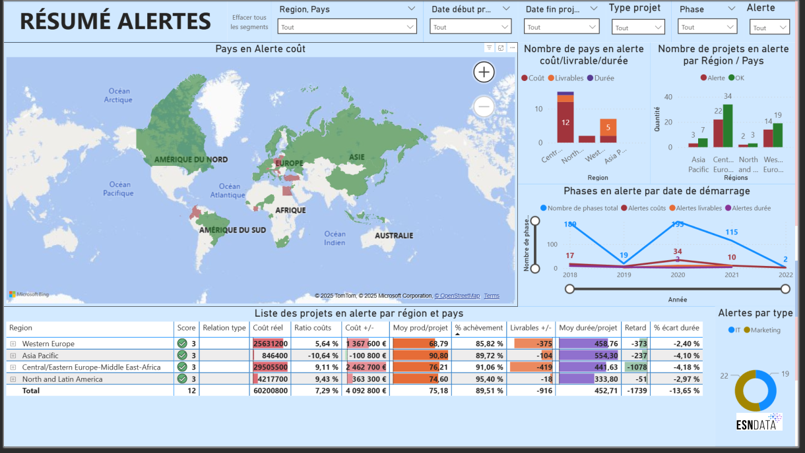

Tableau de bord Power BI — Suivi de projets (Sanitoral)

De quoi s'agit-il ?
Mission réalisée en tant que consultant Data Analyst chez ESN Data, déployé chez le client Sanitoral (fabricant international de soins bucco-dentaires). La cheffe de projet PMO avait besoin d'un tableau de bord pour suivre l'avancement des projets et leurs coûts, identifier les retards, et permettre à 3 niveaux de directeurs (Général, Régional, Pays) de piloter les actions correctives — avec une mise à jour hebdomadaire à réaliser en autonomie par les équipes, sans intervention technique de ma part après livraison.
Sur quoi je me suis appuyé
- Source : export du logiciel de gestion de projets de Sanitoral, couvrant des projets menés entre 2018 et début 2022, avec dictionnaire de données fourni.
- Préparation : nettoyage entièrement automatisé via Power Query Editor pour permettre les mises à jour hebdomadaires en autonomie par les équipes, sans reprise manuelle.
- Modélisation : simplification du modèle relationnel de 7 tables et 9 relations à seulement 4 tables et 3 relations, pour fiabiliser les calculs croisés et faciliter la maintenance.
Comment j'ai procédé
- Cadrage du besoin avant toute construction technique : élaboration d'un Product Strategy Canvas formalisant les user stories, validé par la commanditaire avant de commencer le développement — pour éviter l'écueil classique de se précipiter dans l'outil sans avoir compris le besoin.
- Réalisation d'un mockup ("5 pages pour les dominer tous") pour cadrer la structure finale : une page Alertes globales, une page Coûts, une page Durée, une page Livrables, une page Détail projet.
- Construction des mesures via DAX pour calculer automatiquement les écarts (coût, durée, livrables) et déclencher des indicateurs d'alerte visuels.
- Mise en place de rôles Power BI pour que chaque niveau de directeur (Général, Régional, Pays) accède uniquement aux informations le concernant, sans multiplier les pages.
- Application d'une "technique de l'entonnoir" pour le storytelling final : partir d'une alerte globale au niveau Directeur Général, puis descendre progressivement jusqu'au projet précis en cause au niveau Directeur Pays.
Ce que ça a produit
La démonstration du storytelling en entonnoir a permis d'identifier concrètement que la région qui concentre le plus d'alertes coût et d'identifier quels types de projets sont les plus problématiques. En descendant jusqu'au niveau pays, l'analyse a pu identifier facilement un pays puis un projet à l'origine de la dérive, et comprendre les causes (retards sur certaines phases marketing, dépassement du budget alloué à certaines phases techniques).
Point positif identifié à l'inverse : la durée des projets est globalement respectée voire meilleure que prévu sur l'ensemble des phases — une bonne pratique à maintenir plutôt qu'un axe de correction.
Cela a permis de fournir des axes stratégiques claires pour les directeurs, et de mettre en place des actions correctives concrètes ciblées sur les projets problématiques.
Ce que je ferais différemment
Avec le recul, le tableau de bord est trop exhaustif : chaque page cherche à tout montrer (KPIs, graphiques, tableaux détaillés, cartes) au détriment de l'ergonomie, du design et de la lisibilité immédiate pour des directeurs pressés. Une prochaine itération viserait à alléger chaque page — moins d'éléments par écran, une hiérarchie visuelle plus marquée entre l'information clé et le détail secondaire — pour rendre le dashboard plus digeste au premier coup d'œil, quitte à répartir certains éléments sur des pages supplémentaires plutôt que de tout concentrer.